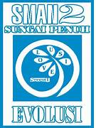
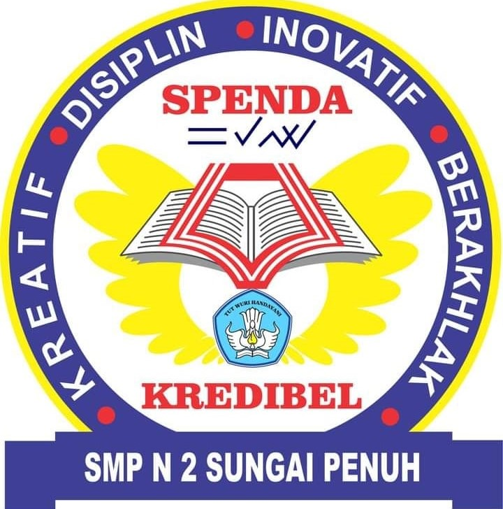

At Institut Teknologi Padang, I explore the world of Informatics Engineering, deepening my knowledge of information technology and its application in today's digital era. I strive to combine theory and practice to prepare myself to become a competent and innovative professional.
SMA Negeri 2 Kota Sungai Penuh

Major: MIA (Mathematics and Natural Sciences)
Accreditation: A
Period: 2018 - 2021
During my three years at SMA Negeri 2 Kota Sungai Penuh, I focused on the study of Mathematics and Natural Sciences. Education here gave me the opportunity to develop analytical skills, logical reasoning, as well as mastery of fundamental science concepts.
SMP Negeri 2 Kota Sungai Penuh

Accreditation: A
Period: 2015 - 2018
During my secondary education at SMP Negeri 2 Kota Sungai Penuh, I gained a strong educational foundation. In addition to academic knowledge, I was also trained to work in teams, communicate effectively, and develop interpersonal skills that are important in the world of work.
SDN 004XI Pelayang Raya
Accreditation: A
Period: 2009 - 2015
My primary education at SDN 004XI Pelayang Raya laid the foundation for my academic and personal development. Here, I was introduced to the basic values of education and given the opportunity to develop my interests and talents in a conducive learning environment.
 Major: Informatics Engineering
Major: Informatics Engineering Accreditation: A
Accreditation: A